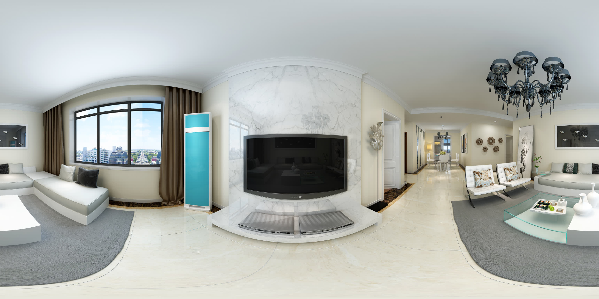

u 填多少」。这一页把它变成点一下：
在图上点你想指的方向，右边直接给出 u、v、对应的偏航角，以及一行可以直接粘回代码的配置。

u。
在左边图上点一下 →
to: 改成目标房间的 id（living / dining / kitchen / bedroom / study / bath）。u = 0.75 + yaw ÷ 360
yaw ← uyaw = (u − 0.75) × 360
u = 0.75 对应的正是 −Z 方向。
把 yaw 设成 −90，u 就是 0.5——正对图的正中间那一列。
PANO 里对应房间的 spots；to: 改成目标房间，label: 改成显示文字。yaw = (u − 0.75) × 360，再拿这个 yaw 去看《全景漫游器》里热点是不是正对着你要的方向。